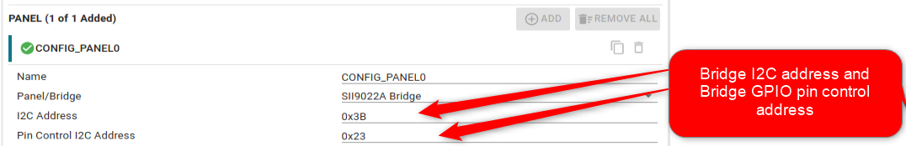
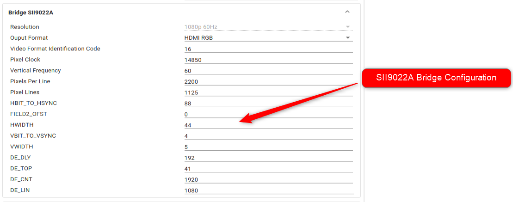

The Panel driver provides API to control I2C based display bridge driver present in the board. The display bridge can be a DPI/DSI based bridge that can convert DPI/DSI signals to HDMI output or any other output format.
The AM62P-sk board has a SII9022A bridge (Lattice semiconductor), I2C based DPI to HDMI output bridge, that takes DPI output from SoC and converts them to HDMI signals. The panel driver allows configuration over sysconfig and integrates a I2C based driver for SII9022A bridge.
Features Supported
- Configurable I2C address for bridge.
- Configurable I2C address for specific GPIO pin control for bridge.
- Video timing parameters configuration for SII9022A bridge.
- Configuration for output resolution for SII9022A bridge.
SysConfig Features
- Note
- It is strongly recommend to use SysConfig where it is available instead of using direct SW API calls. This will help simplify the SW application and also catch common mistakes early in the development cycle.
- Option to specify I2C address for the bridge and bridge pin control.

Panel I2C Configuration
- Configuration for SII9022A bridge.

SII9022A bridge Configuration
Features NOT Supported
Example Usage
Include the below file to access the APIs
#include <board/panel/panel_i2c.h>
BridgeSii9022a_Object gBridgeSii9022aObj =
{
.modeInfo = {
.modeCode = 16,
.pixClk = 14850,
.vFreq = 60,
.pixels = 2200,
.lines = 1125,
.embSyncPrms = {
.hBitToHSync = 88,
.field2Offset = 0,
.hWidth = 44,
.vBitToVSync = 4,
.vWidth = 5.
},
.extSyncPrms = {
.deDelay = 192,
.deTop = 41,
.deCnt = 1920,
.deLine = 1080,
}
}
};
{
{
.deviceI2cAddr = 0x3B,
.inpClk = 0U,
.hotPlugGpioIntrLine = 0U,
.outputFormat = BRIDGE_SII9022A_HDMI_RGB,
},
.vidOutParams = {
}
},
};
{
{
.pinCtrlI2cAddr = 0x23,
.numPins = 1,
.pinConf = {
{
.pinIoNum = 21,
}
},
},
};
{
{
.fxns = &gPanelBridgeSii9022aFxns,
.object = (void *)&gBridgeSii9022aObj,
.pinConfig = &gPinCtrlConfig[0],
},
};
uint32_t gPanelConfigNum = CONFIG_PANEL_NUM_INSTANCES;
Instance Open Example
gPanelHandle[CONFIG_PANEL0] =
NULL;
gPanelHandle[CONFIG_PANEL0] =
Panel_open(CONFIG_PANEL0, &gPanelParams[CONFIG_PANEL0]);
if (!gPanelHandle[CONFIG_PANEL0])
{
}
Instance Close Example
API
APIs for PANEL
 1.8.20
1.8.20